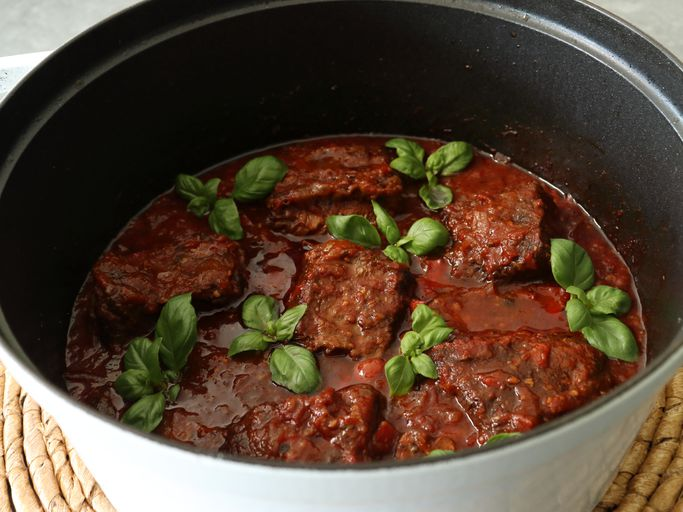

Ribbbbbbbbbbs

How to make ribs
Wondering how to grill baby back ribs? You'll find a detailed ingredient list and step-by-step instructions in
the recipe below, but let's go over the basics:
Ribs ingredient:
- 1 tablespoon ground cumin
- 1 tablespoon chili powder
- 1 tablespoon paprika
- salt and pepper to taste
- 3 pounds baby back pork ribs
- 1 cup barbeque sauce
How to Make Ribs Step-By-Step:
- Make the spice rub.
- Trim the ribs, then season with the spice mix.
- Cook the ribs on the grill according to the detailed recipe below.
- Brush the grilled baby back ribs with barbecue sauce.
- Grill for five more minutes.